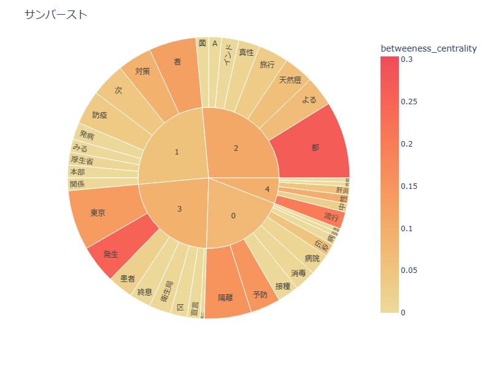
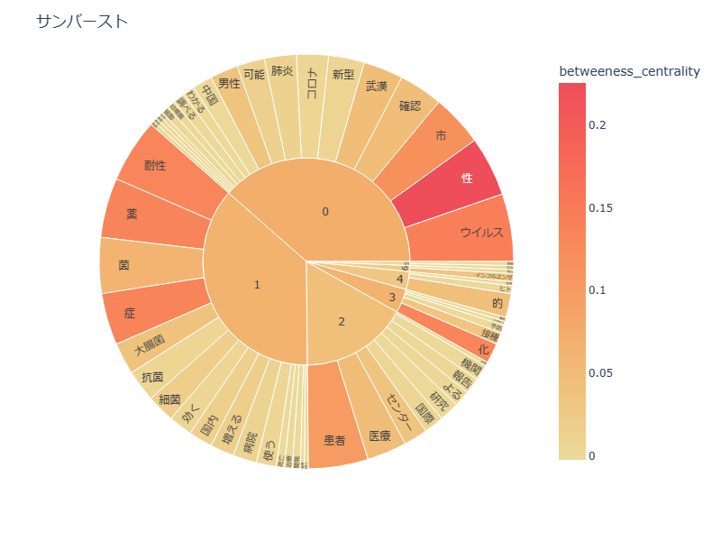
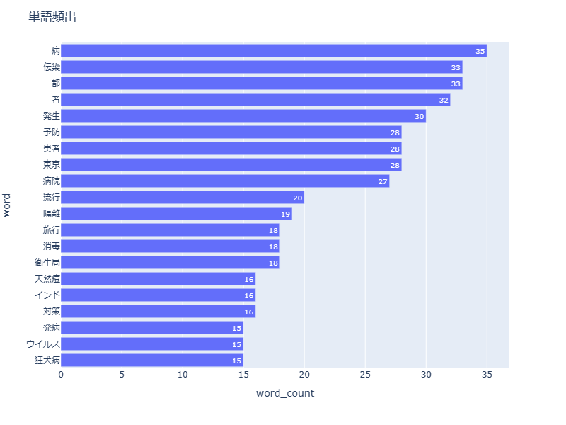
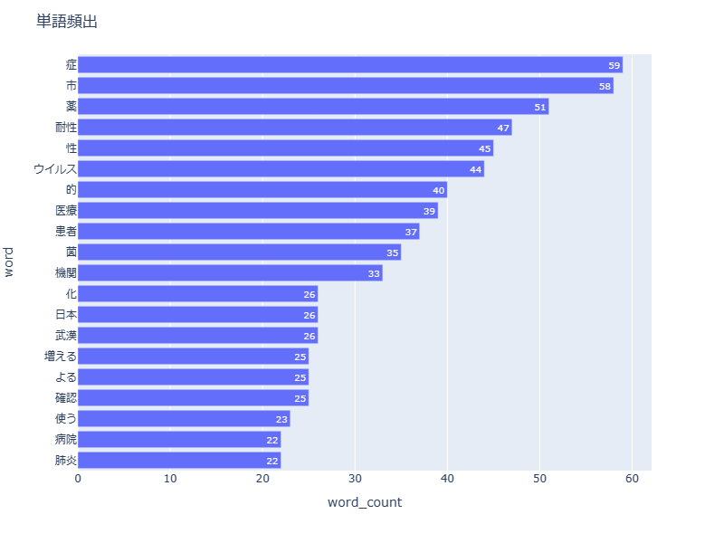
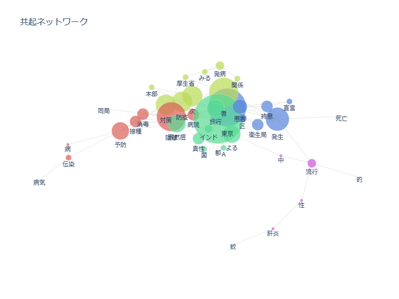
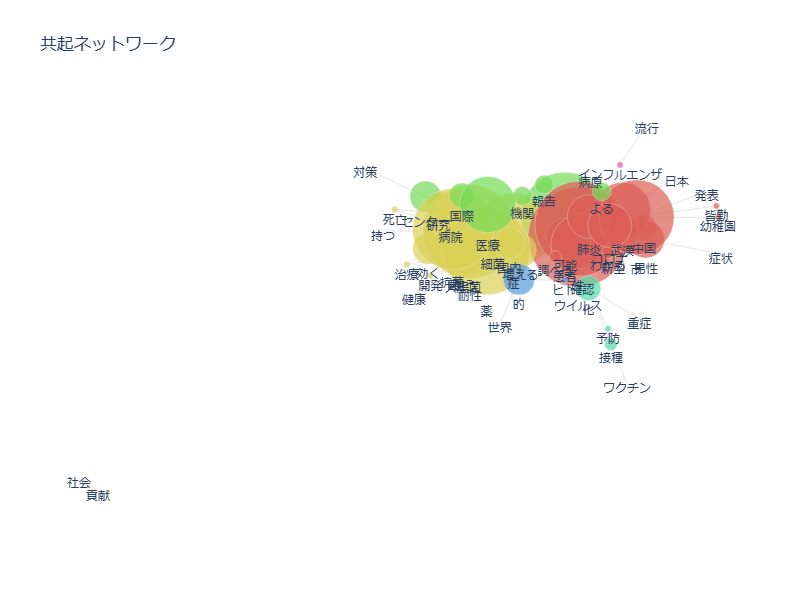

≪テキストマイニング≫
今回はテキストマイニングを活用し、今まで日本ではどのような感染症や伝染病が流行したのかを調べていきたいと思います。
今と昔で、サンバースト,グラフ、共起ネットワークを比較してみます。
 
 
 
それぞれ比較して読み取れること
- 昔流行していた伝染病・感染症：天然痘、狂犬病、肺炎
- 現代流行している伝染病・感染症：インフルエンザ、コロナウイルス
- 国内で取り上げられている地域は、昔も現代も東京である
- 昔はインド、現代は中国の武漢から病が持ち込まれたということ
※他の記事を共起ネットワークにかけた際、「口蹄疫」という病気も海外から持ち込まれていたことが分かりました。データが見つからず、乗せることができませんでした。すみません・・